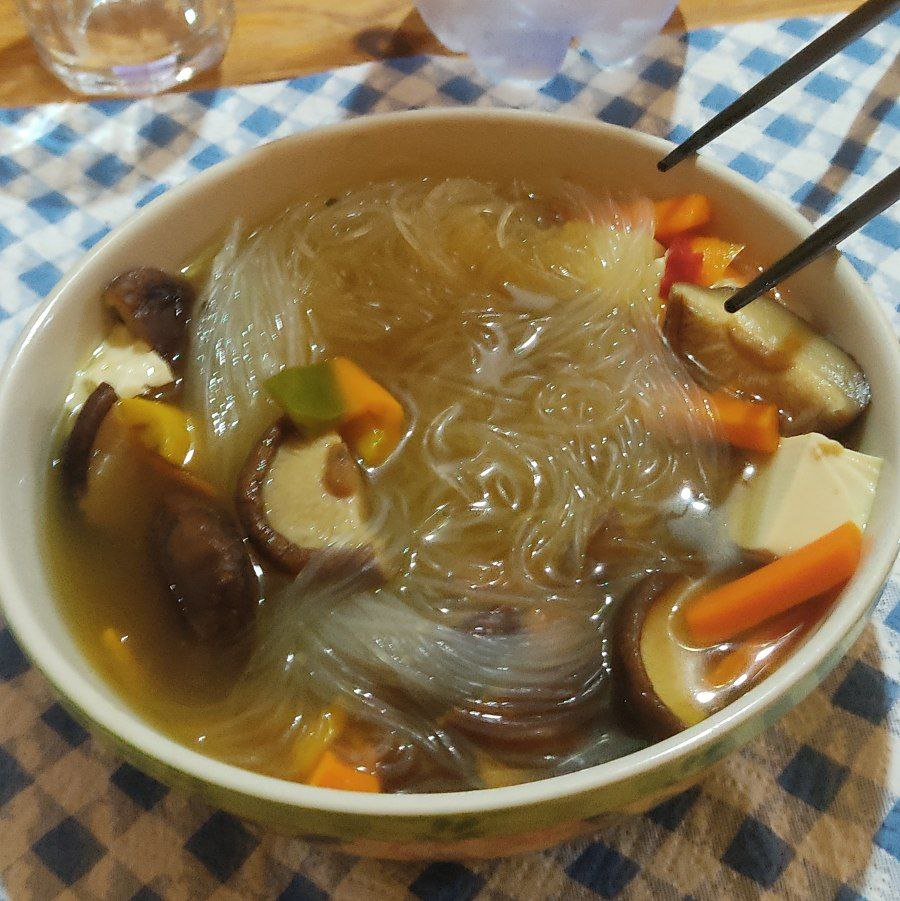

Glass Noodles Soup (Lazy)

Description
A quick warm bowl of soup with veggies :)
Ingredients for one
100gr silken tofu
80gr glass noodles
6 mushrooms
2 cups of water
1 vegetable stock cube
1 carrot
1 bell pepper
1 spoon miso paste
Steps
Heat up the water to a boil in a pot, add vegetable stock cube when boiling
Chop the mushrooms, the bell pepper and the carrot
Add to boiling water and let them cook until slightly soft
Cut the silken tofu into cubes, add to water when vegetables are cooked
Add noodles to soup and let them cook following the instructions on the package
With the heat turned off add the miso paste and let it dissolve in the broth
All done!! Serve it up!!!